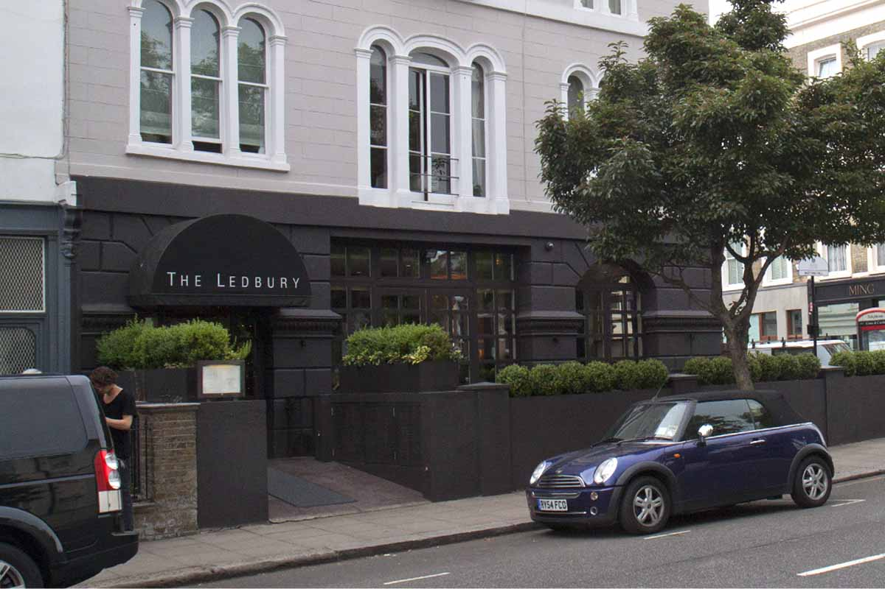
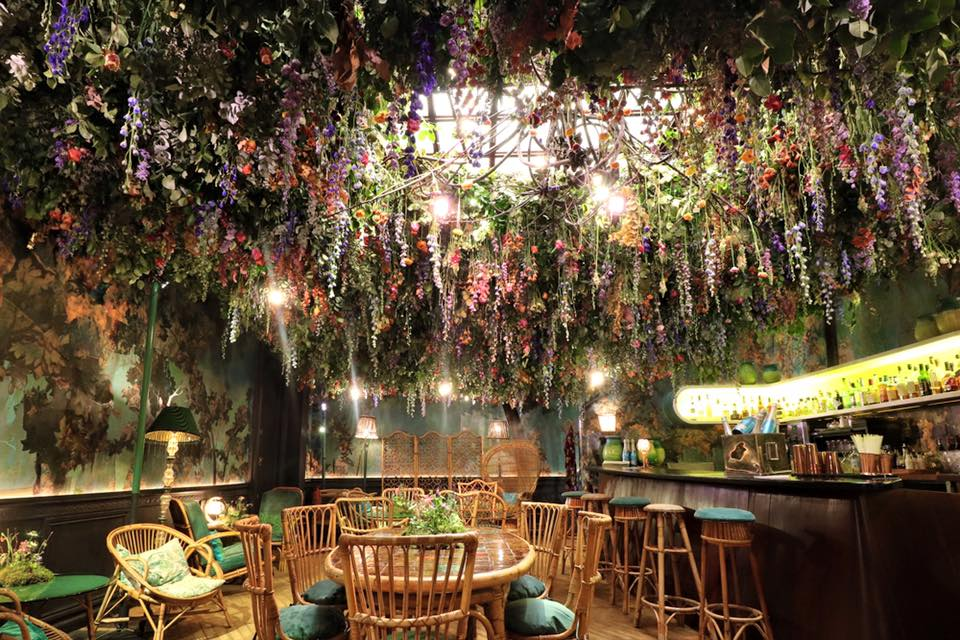
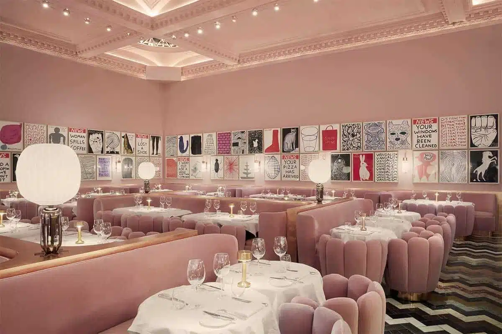
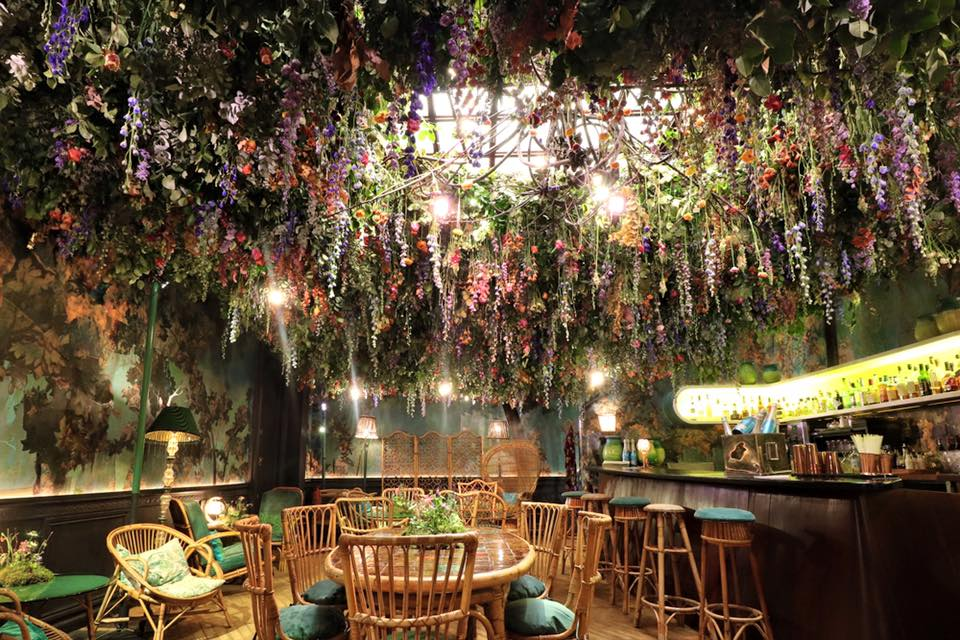
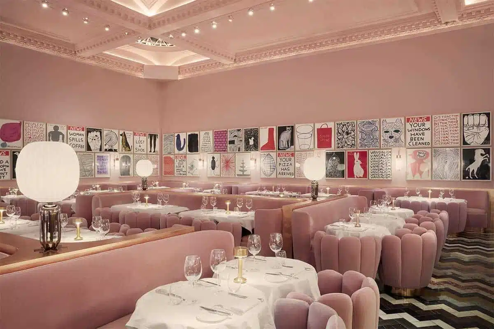
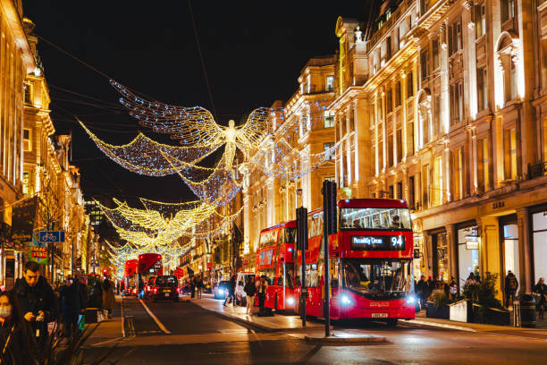
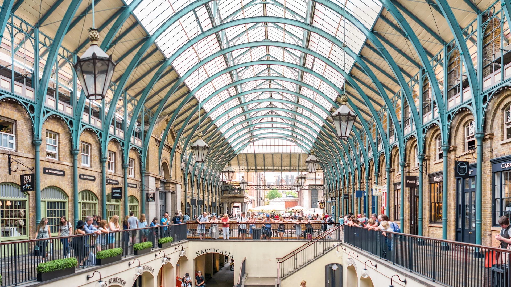
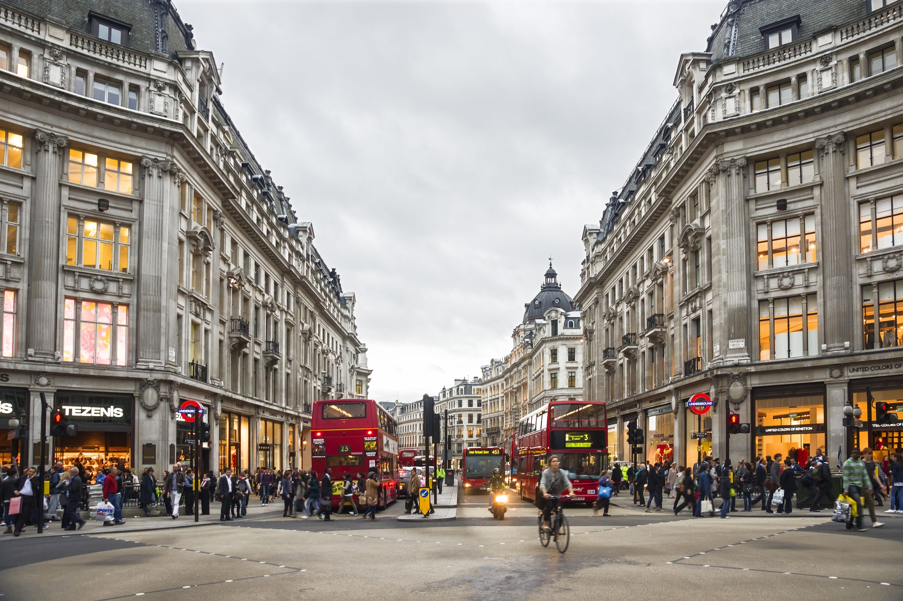

Yeme-İçme Mekanları
- Sketch
- Dishoom
- The Ledbury 
Sketch 2003 yılında Mourad Mazouz tarafından kurulan 5 farklı konsepte sahip bir restorandır. Restoran 18. yüzyıldan kalma bir binanın iki katından oluşmaktadır. Mutfağı 'Yeni Fransız' mutfağı olarak anılmaktadır. 'The Parlour' isimli bölümü kahvaltı ve öğle yemekleri yiyebileceğiniz bir bölümdür. 'The Lecture Room & Library' dedikleri bölüm üç Michelin yıldızına sahip Modern Fransız mutfağının servis edildiği lüks bir restoran bölümüdür. 'The Glade' bölümündeki orman temalı dekorasyon ziyaretçiler arasında çok popülerdir ve genellikle öğle yemeği ve kokteyller için kullanılır. 'The Gallery' pembe tonları ve sanatçı David Shrigley'in tasarımları ile dizayn edilmiş bir salondur. Özellikle ikindi çayı ve akşam yemekleri için tercih edilen bir salondur. 'The East Bar & Pods' farklı içeceklerin sunulduğu bir alandır. Sketch iç dizaynı, tasarımı ve gastronomik açıdan Londra'da öne çıkan mekanlardan biridir.
 The Glade">
The Gallery">
The Glade">
The Gallery">

Dishoom 2010 yılında Covent Garden'da açılan şu an Londra'nın farklı bölgelerinde de şubesi bulunan bir mekandır. Restoran gün boyu hizmet verir ve geniş bir yemek çeşitliliği yelpazesi sunar. Menüde, Bombay sokak lezzetleri ve geleneksel Hint mutfağından esinlenip oluşturulan yemeklerin modern halleri bulunmaktadır. Dishoom'un her şubesi farklı bir temaya sahiptir. İlk açıldığı yer olan Covent Garden şubesi 1960'ların Bombay'ındaki İrani kafelerin atmosferini yansıtacak şekilde oluşturulmuştur.
The Ledbury 2005 yılında Avustralyalı şef Brett Graham tarafından kurulmuştur. Üç Michelin yıldızına sahip ve dünaynın en iyi 50 restoranı arasında yer almaktadır. Londra'nın Notting Hill bölgesinde bulunur. Restoranın içi şık ve modern bir tasarıma sahiptir ve rahat bir yemek deneyimi sunar. Restorandaki yemekler Fransız mutfağının İngiliz ve Japon malzemeleriyle harmanlanmış hali ile oluşmaktadır. Ayrıca restoran menüdeki yemeklerinide kendi bünyesinde yetiştirdikleri mantar ve benzeri malzemeler ile oluşturmaktadır. Londra'daki en iyi restoranlardan biri kabul edilir. Hem yerel halk hem de ziyaretçilerin sevdiği bir mekandır.
NOT:Bu sayfada anlatmış olduğumuz mekanlar Londra kültürüne uygun olduğu için yemek sipariş etmeden önce dikkat etmelisiniz. Yemek yemek için oturduğunuz salonlardaki yemek veya içecek servisine dikkat ederek oturmaya dikkat edin. Bu sayede daha rahat bir yemek deneyimine sahip olabilirsiniz.
Alışveriş Yerleri
- Oxford Street 
- Covent Garden 
- Regent Street 
Orta Çağ'da Tyburn Street olarak adlandırılan bu yol 18. yüzyılda Oxford Street olarak değiştirilmiştir. Oxford Street İngiltere'nin başkenti Londra'da bulunmaktadır. Burası Londra'nın en popüler ve kalabalık olan yerlerinden biridir. Ayrıca bu cadde Avrupa'nın en yoğun caddesi olarak kabul edilmektedir. 1.9 km uzunluğunda olan bu cadde 300'den fazla dünyaca ünlü markanın bulunduğu Londra'lıların ve turistlerin alışveriş için mutlaka ziyaret ettiği noktalardan biridir.
Covent Garden Londra'nın merkezinde yer alan 17. yüzyılda meyve sebze pazarı olarak kullanılmak üzere yapılmış bir alandır. Şu anda ise kafeleri, restoranları, antika ve butik dükkanları ile farklı mağazaların bulunduğu bir yerdir. Covent Garden'daki cam çatılı binanın önünde bir çok sokak sanatçısı gösteri sergiler. Ayrıca Covent Garden'a gelmişken bu alanın yanında olan London Transport Museum ve Royal Opera House'u ziyaret edebilirsiniz. Londra'yı Noel zamanında ziyaret ederseniz mutlaka farklı etkinlikleri ve süslemeleri görmek için burayı ziyaret etmelisiniz.
Regent Street 19. yüzyılda ünlü mimar John Nash tarafından tasarlanmıştır. Londra'nın en ünlü alışveriş caddelerinden biri olarak bilinen bu yer geniş yelpazede mağaza seçenekleri bulunduruyor. Regent Street ve çevresi lüks moda markaları, şık butikler, dünyaca ünlü mağazalar, ödüllü restoranlar ve sağlıklı yaşam deneyimi sunan yerlerden oluşur. Etkinlik programı dünya çapında bilinir ve bir çok moda festivali, ikonik Noel ışıklarının yakılması gibi etkinlikleri içerir.
Kültür ve Sanat
Londra sanat ve kültürle alakalı bir çok etkinlik sunar. Şehirde her zevke ve sanata uygun etkinlik bulmak mümkündür. Bu yazıda şehirde olan etkinlikleri ve etkinliklerin yapıldığı yerler hakkında bilgi alacaksınız.
Müzeler ve Sergiler
- British Museum: Antik çağdan modern döneme kadar geniş bir koleksiyon bulundurur.
- Tate Modern: Modern sanat eserlerinin sergilendiği bir müzedir.
- Saatchi Gallery: Çağdaş sanatçıların eserlerinin sergilendiği sergiler bulunur.
Tiyatrolar
- Ulusal Tiyatro: Klasik ve çağdaş tiyatro oyunları oynanır.
- West End: West End tiyatrosu New York'taki Broadway tiyatrosunun Londra versiyonudur. Burada bir çok müzikal, oyun ve drama gösterileri sergilenmektedir.
Konser ve Performans Sanatları
- Barbican Centre: Avrupa'nın en büyük gösteri sanatları merkezidir. Londra ve BBC Senfoni Orkestraları'nın gösteri yaptıkları yerdir.
- Royal Albert Hall: Her yıl 350'den fazla etkinlik düzenlenir. Bu etkinliklerin içinde konserler, opera performansları, ödül törenleri, topluluk organizasyonları ve resmi yemekler gibi farklı etkinlikler bulunmaktadır.
Sanat Galerileri
- Tate Britain: 1500'lü yıllardan günümüze kadar ortaya çıkan eserler bu sergide bulunur.
- The National Gallery: 13. yüzyıl ve 20. yüzyıl arasındaki 2300'den fazla tabloya ev sahipiliği yapar. Giriş ücretsizdir.
Film ve Sinema
- BFI Southbank: 1951 yılında açılan bu yer klasik, bağımsız ve İngilizce olmayan filmlerin izlendiği yerdir.
- Londra Film Festivali: 50 yıldır düzenlenen bu festivalde bir çok ülkeden 300'ü aşkın film gösterilir.
Edebiyat ve Şiir
- British Library: Dünyanın en büyük kütüphanelerinden biri olan bu kütüphane 14 milyon kitap ve 170 milyon ögeye ev sahipliği yapar.
Dans ve Bale
- Royal Opera House: Diğer adı ile 'Covent Garden Operası' diye de bilinir. Opera ve bale gösterilerinin sergilendiği bir yerdir.